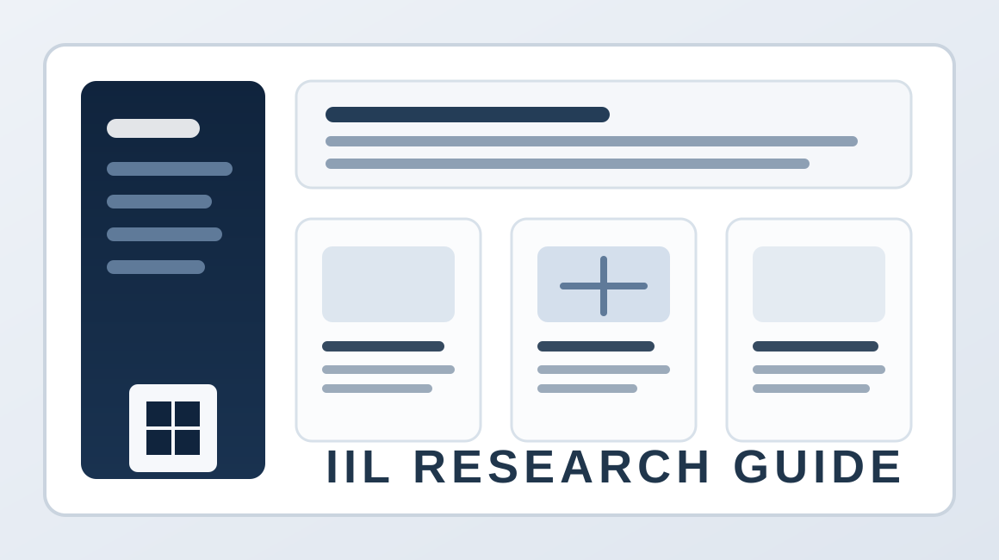
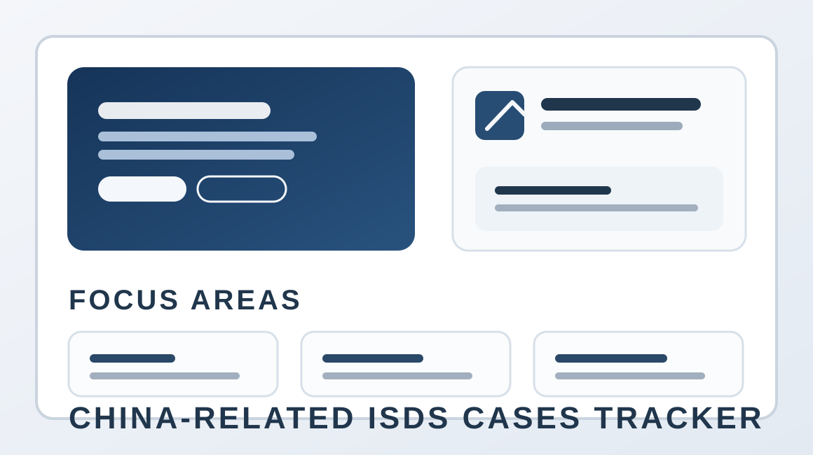

Projects
Selected research tools and reference platforms in international investment law.

Project 1
IIL Research Guide
Third-edition guide to core international investment law online resources,
organized around research use cases such as organizations, practice
tracking, insights, case search, and treaty search.

Project 2
China-Related ISDS Cases Tracker
Research platform tracking China-related investor-State disputes, with case
data, issue analysis, and supporting resources.